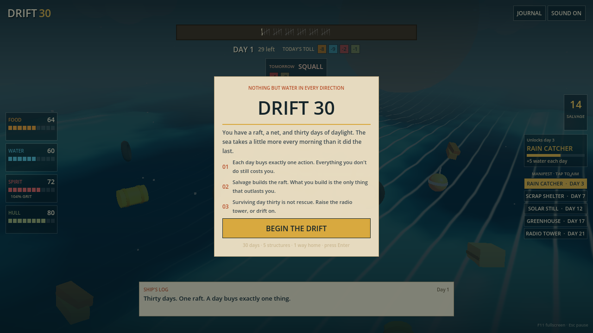
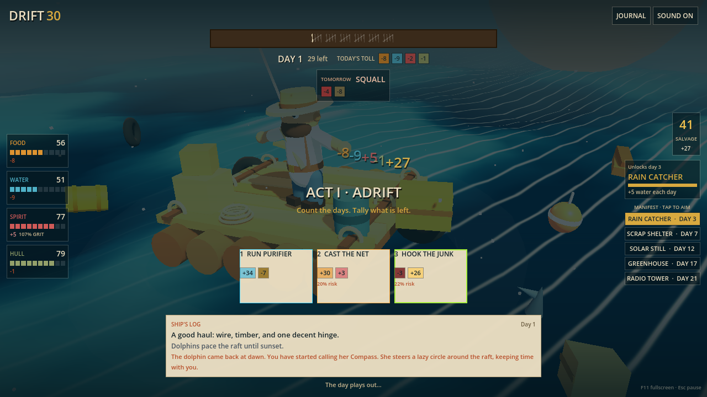

THE DEAL
Each dawn deals three actions — always affordable, always covering whatever is closest to killing you. You take exactly one. The rest of the day belongs to the sea.
A 30-day survival gamble · nothing but water in every direction
The Sable Ann went down at 03:40. You woke on the sea, on a raft the storm built out of her bones. You have a net, a purifier, and thirty days of daylight before the monsoon closes the shipping lanes.
A day buys exactly one thing. The sea buys everything else.
Day 04 · take the helm

loads the game engine · sound on first input
CAST THE NET feeds you. HOOK THE JUNK builds the future. You cannot do both before dusk.
on a keyboard: 1–4 act · M mute · Esc pause
Day 09 · the briefing

Each dawn deals three actions — always affordable, always covering whatever is closest to killing you. You take exactly one. The rest of the day belongs to the sea.
Hunger and thirst climb in four steps across the run. No single day's work ever covers a single day's bill — the gap is what the raft is for.
The forecast is honest: a coming TEMPEST is a reason to spend today on the hull. The sea pre-rolls its weather so you can out-think it.
Day 17 · the manifest
Five structures unlock as the days pass. The build order is yours — rushing the tower and skipping the greenhouse is a legitimate, dangerous plan.
Day 30 · how it ends
The tower catches a freighter on the third sweep. You built the thing that could shout, and someone was listening.
Thirty days and you are alive — but nothing on this deck can call for help. You point the raft north and start to paddle.
The tanks ran dry, the stores went, the hull gave, or you simply stopped bailing. The sea does not starve you on purpose. It forgets to feed you.